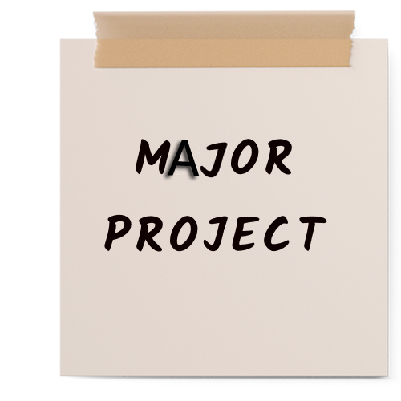

About the Project
The project aimed to develop a cell phone-based voting machine with voice acknowledgment. It allowed users to cast votes via phone call using Dual-Tone Multi-Frequency (DTMF) tones. The system could receive calls and gather votes from callers, attributing them to specific candidates or choices. Votes were then counted and stored in the Electrically Erasable Programmable Read-Only Memory (EEPROM).
Project Components
- PIC16F877A microcontroller
- APR voice module
- MT8870 DTMF decoder
- EEPROM
Project Features
- Voting Through Phone Calls
- Voice Acknowledgment
- DTMF Tone Recognition
- Vote Counting and Storage
Project Team
Kobid Karki
Lizana Khadka
Rashmi Paudel
Roshan Ghimire
Photos
